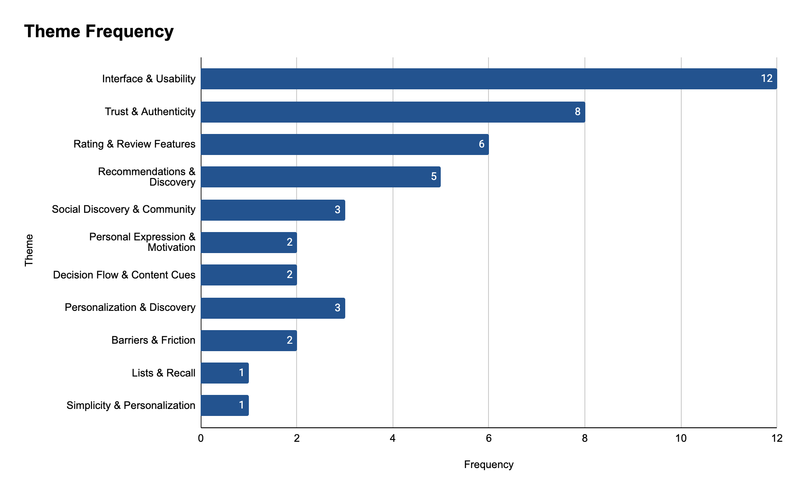
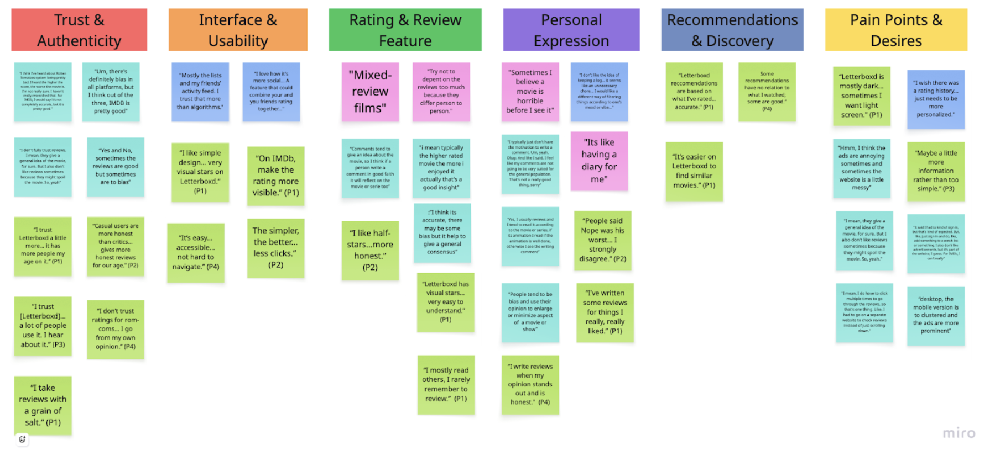
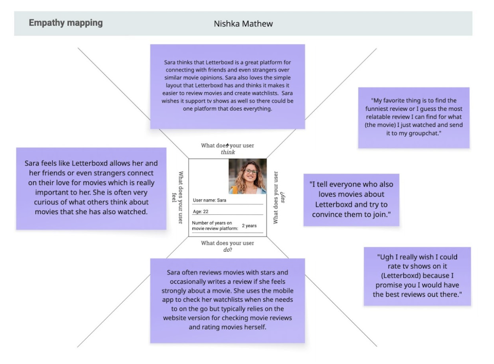
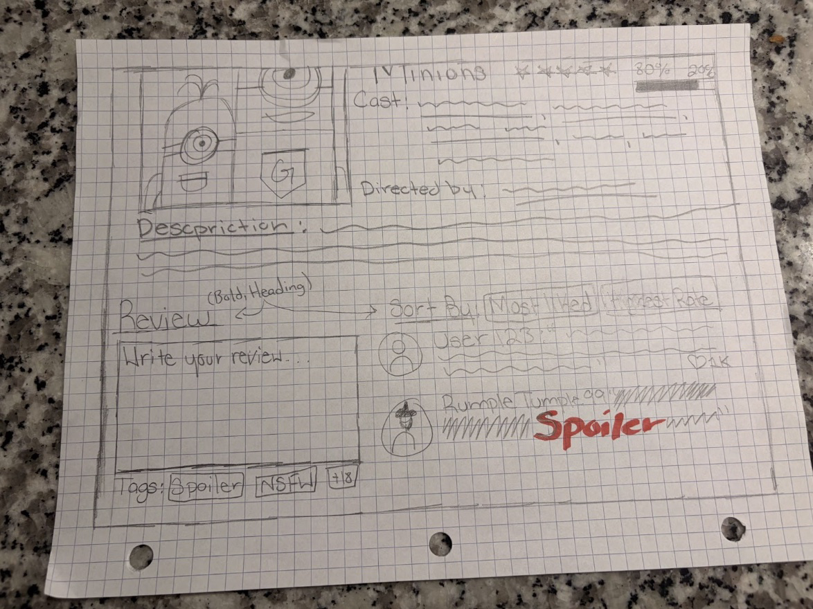
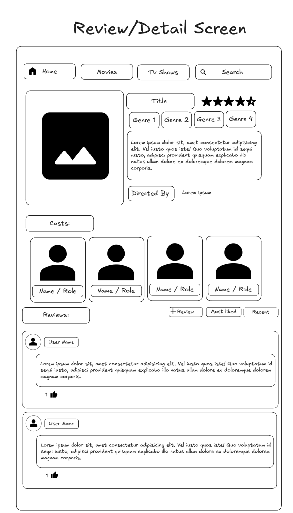
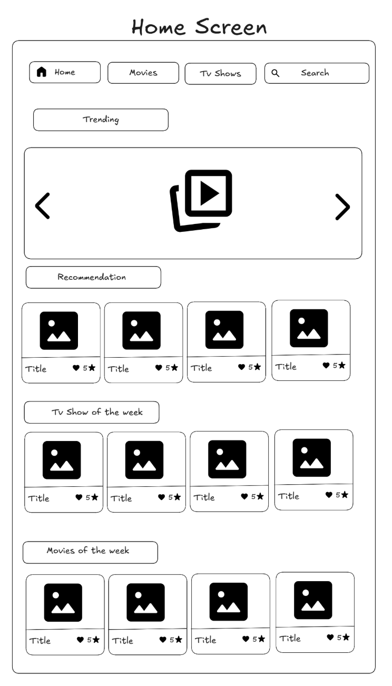
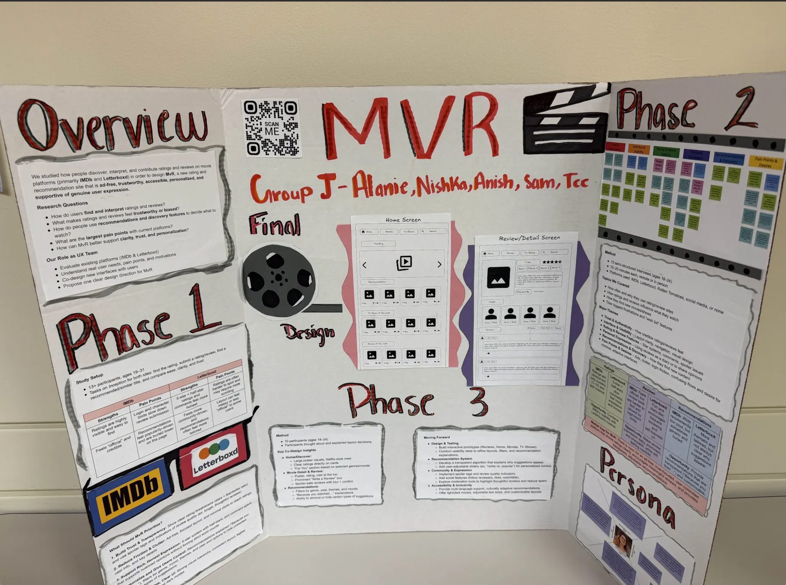

UX Research · 3-Phase Study · Team of 5
A semester-long research and design project asking one honest question: why does finding something to watch feel harder than it should?
01 — The Problem
IMDb, Letterboxd, Rotten Tomatoes. There is no shortage of places to look up a movie. And yet something keeps going wrong between "I want to watch something" and "I am actually watching something." Reviews feel untrustworthy. Layouts feel cluttered. Recommendations feel random. Ads are everywhere.
Our team wanted to understand why, and then do something about it. MvR started as a research question and ended as a fully designed application concept, built on three phases of user research, usability testing, qualitative interviews, and collaborative co-design sessions with real users.
02 — Phase 1: Usability Evaluation
Phase 1 was a structured usability evaluation of existing platforms: IMDb, Letterboxd, Rotten Tomatoes, Google, and TVChart. We recruited participants and walked them through three core tasks on each platform, discovering ratings, submitting a review, and finding recommendations, while recording time to completion, error rates, and trust ratings.
One moment stuck with the team. A participant rated submitting a review on IMDb a 5 out of 7 for ease. Not because the task was hard, but because a hidden minimum character requirement blocked them mid-flow. They had no idea it was coming. That kind of invisible friction, the kind that only shows up when a real person tries to do a real thing, became the thread we pulled on for the rest of the project.
03 — Phase 2: Understanding People
Phase 2 expanded the research significantly. We conducted 15 semi-structured interviews with participants aged 18 to 24, a mix of active IMDb users, active Letterboxd users, and people who barely used either. That last group turned out to be some of the most revealing.
The interview covered four areas: how and how often people use review platforms, how they interpret and trust ratings, how they discover new content, and what they wish was different. Each session ran 15 to 20 minutes, followed by qualitative coding. Open coding first, then axial coding to cluster patterns, then a full codebook the team applied consistently across all transcripts.
Nine themes emerged. The two most frequent were Interface and Usability and Trust and Authenticity. People were not struggling to find movies. They were struggling to trust what they found, and struggling to see through the visual noise between them and the information they actually needed.
"I trust Letterboxd a little more. It has more people my age on it."
P1"The simpler, the better. Less clicks."
P2"It's like having a diary for me."
P12, on Letterboxd"The ads are annoying sometimes, and the website is a little messy."
P10"I wish there was a rating history. It just needs to be more personalized."
P5From the interview data we built an affinity diagram, two personas, and empathy maps that captured the emotional texture of using these platforms. The feelings underneath the friction, sitting right alongside the usability data.


Theme frequency chart · Affinity diagram from qualitative coding

Persona and empathy map developed from interview synthesis
04 — Phase 3: Co-Design
Phase 3 was co-design. We ran sessions with ten participants aged 18 to 24, two per team member, each focused on three screens: the Home and Discover page, the Movie Detail and Review page, and the Recommendations page. Participants sketched while thinking aloud, explaining their layout decisions, hierarchy choices, and what they trusted or distrusted about the platforms they already used.
The sessions surfaced things that interviews alone never would have. People wanted movie posters to be large, Netflix-style, not thumbnails. They wanted ratings visible immediately, not buried. They wanted spoiler protection that required a deliberate tap to unlock, not a warning you could accidentally scroll past. And almost every single participant, unprompted, drew the search bar at the very top of the screen.

Paper sketches from co-design sessions — participants designing the experience themselves
Three design directions came out of the co-design synthesis:
Trusted Transparency
Star ratings paired with a like/dislike ratio. Spoiler tags with blurred previews that require a confirmation tap. Filters for most liked, highest rated, and spoiler-free reviews.
Streamlined Navigation
A persistent top search bar. A card-based grid showing only the essentials: poster, title, stars. Key information at the top of every page. No ads, anywhere.
Personalized Discovery
Genre, mood, and theme filters for a curated For You page. Hover preview cards with "Because you liked..." context. A toggle to remove categories you never want to see again.
05 — From Sketches to Figma
The higher-fidelity Figma designs brought the three concepts together into two core screens. The Home Screen used a clean card grid with cover art, title, and star rating only. Trending, TV Show of the Week, and Movies of the Week sections broke up the grid without adding clutter. The search bar stayed permanently visible at the top, exactly where every co-design participant drew it.
The Review Screen put the movie title, poster, rating, and like/dislike ratio at the top. Cast photos were large and clickable. The Write a Review box was impossible to miss. Review filters sat just above the list. Spoiler-tagged entries blurred until deliberately unlocked. A 5-star system replaced the 1 to 10 numeric scale after research showed users found it faster to interpret and more aligned with their existing mental models from streaming platforms.


Low-fidelity prototype sketches — translating co-design outputs into structured wireframes
06 — What MvR Became
MvR is what those platforms would look like if the design decisions started with user behavior. No ads. Transparent review quality signals. Filters that give users control without overwhelming them. A rating system simple enough for the casual viewer and expressive enough for the dedicated one.
The three phases were not sequential in the way research phases usually are. Each one changed what we thought the next one needed to answer. Phase 1 showed us where the friction lived. Phase 2 showed us why it mattered to people. Phase 3 showed us what users would actually build if given the tools.
The final designs reflect all three.

Final research poster presented to stakeholders
Impact